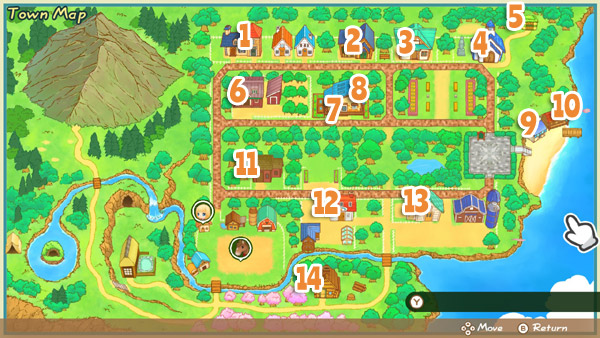

Lugares


Hay 11 tiendas de comerciantes repartidas por la ciudad Mineral. ¡También hay 3 edificios en los que puedes obtener servicio de forma gratuita! Todas las tiendas tienen horarios y días de apertura establecidos. Hay un cartel en el exterior de la mayoría de las tiendas que te indicará en qué horario están abiertas y qué días de la semana cierran. La mayoría de las tiendas estarán cerradas los días festivos importantes; sin embargo, el taller permanece abierto.
Si examinas el mostrador de una tienda y aparece el mensaje "Mostrador", significa que la tienda no está abierta en ese momento. Podrás acceder a sus edificios más temprano durante el día a medida que vayas entablando amistad con los comerciantes, pero el horario de atención no cambiará.